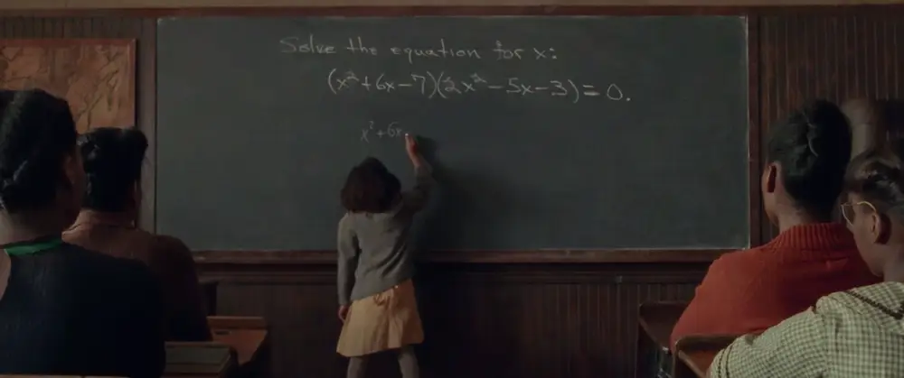

Childhood:
Katherine Johnson was born in White Sulphur Springs on August 26, 1918. She was born to Joylette Roberta and Joshua McKinley Coleman and was the youngest of 4 children. At a young age she enjoyed mathematics and could easily solve mathematical equations, and most of her childhood consisted of this.

Education:
Katherine Johnson started high school when she was just 10 years old and college when she was 15, when she started taking classes to become a mathematician. Her college education was at West Virginia University and she graduated in 1937.
Work/Adult Life:
Katherine Johnson first married James Goble, but he passed away. Shortly after, she remarried James Johnson in 1959. he enjoyed traveling, playing card games, and spending quality time with her family. Katherine Johnson worked at NASA as a “human calculator” performing complex mathematical calculations for the agency. She studied geometry and its uses for space travel. She worked out the calculations to send austronauts into orbit around Earth and also did the calculations to send astronauts all the way to the moon. She was given the Congressional Medal of Honor in 2019.